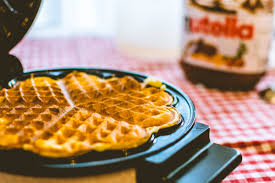

Pea Waffle

Nutritional benefits of the Pea Waffle
Waffles are one of the most convenient meals to make at home,
so if you dont have a lot of time and is lookig for a easy, and quick, way to introducing vegetables
to your kids, the pea waffle is an excellent option.Many kids who refuse to eat peas in their plates,
end up loving the Pea Waffle!
A delicious, healthy and quick meal for children!
Ingredients
- 1 table spoon of peas
- 2 table spoons of povilho azedo
- 1 table spoon of povilho doce
- 1 thin slice of cheese
- 1 pinch of salt
- 1 slice of cheese
- 3 table spoons of water or until it gets to softer texture
Steps
- Mix all the ingredients with a mixer or blender/li>
- Cook until golden-brown appearance